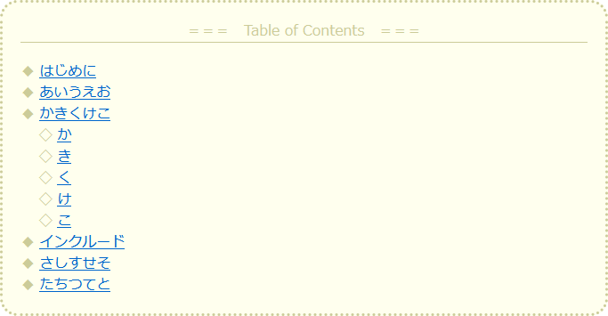
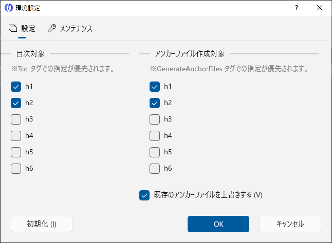

Introduction
Overview
 Chochoito File Merge 2 is a tool for developers that assists in creating static HTML help.
Chochoito File Merge 2 is a tool for developers that assists in creating static HTML help.
By creating a make file,
- Include and merge separate files
- Table of contents insertion
- Variable display
and so on.
Incidentally, this help was also created with Chochoito File Merge 2, and the table of contents on the left side was also inserted automatically.
(Supplement)
Images shown in this help at a reduced size will enlarge slightly when hovered over with the mouse, and will be displayed at full size when clicked on.
(Supplement)
If the content differs from the Japanese help, the Japanese help takes precedence.
Operating environment
Please see the support information on the official Chochoito File Merge 2 page.
Installation
Get Chochoito File Merge 2 from the Microsoft Store to complete the installation.
Updates (version upgrades) are automatic. When an updated version is released, it will be automatically updated after you have used Chochoito File Merge 2 several times, so you usually do not need to do any updating. If you want to update immediately instead of waiting for an automatic update, please update at the Microsoft Store.
Tutorial
This section describes the sequence of steps to create HTML help with Chochoito File Merge 2.
Launch
 Chochoito File Merge 2 is registered in the "C" position in the Start menu, click on it to launch it.
Chochoito File Merge 2 is registered in the "C" position in the Start menu, click on it to launch it.
 The main window appears.
The main window appears.
(Supplement)
The display language depends on the language setting of the OS.
Make file specification
Specify a make file to create HTML help.
In this tutorial, we will specify a make file that is provided as a sample.
click on the  (Help button) and the "Sample Folder" menu to open the folder where the samples are available.
(Help button) and the "Sample Folder" menu to open the folder where the samples are available.
Drag and drop "SampleMakeFile.cfm2" in the sample folder into the "Make File" field.
(Attention)
The sample folder also contains the following files, which are samples referenced in the make file. Please specify "SampleMakeFile.cfm2" in the Make File field.
- SampleAnchorMakeFile.cfm2anchor...Anchor Make File. Used for anchor file creation.
- SampleIncludeFile.cfm2include...Sample to be included.
In addition to drag and drop, you can also use the Browse button or enter directly into the "Make File" field.
To enter directly in the "Make File" field, enter "Documents\Samples\SampleMakeFile.cfm2" as a full path or relative path.
 The contents of the make file are HTML files. Therefore, you can view the contents of the sample make file by opening it in a Web browser.
The contents of the make file are HTML files. Therefore, you can view the contents of the sample make file by opening it in a Web browser.
Make files differ from regular HTML files in that they contain embedded "Cfm tags" in the form of HTML comments.
For example, if the Cfm tag "<!-- Cfm/Toc: -->" is embedded, a table of contents will be inserted at that location.
If you open the sample make file in a text editor, you can see how the Cfm tag looks like.
HTML Help Creation
After specifying the make file, click the "Start" button to create HTML help.
In the sample make file, the Cfm tag specifies the path to the HTML help, which is created in "C:\Temp\Sample.html".

Clicking the "Open Output File" button will open the generated HTML help in your browser.
A table of contents is inserted at the top of the HTML help. Since this is HTML, you can freely change the format of the table of contents using CSS.
In addition, several HTML files are created in the HelpParts folder, which are called anchor files. When you open an anchor file, you are immediately taken to the HTML Help, but not to the beginning of the HTML Help, but to the corresponding heading.
This concludes the tutorial.
See the next chapter and beyond for more detailed instructions.
Settings

Configures settings related to the overall operation of Chochoito File Merge 2.
After setting, click the OK button to confirm the setting. Click the Initialize button to restore the default settings.
Request
Nico Nico Douga users
If you have a Nico Nico Douga account, it would be great if you could follow SHINTA's account.
Creator Support
Nico Nico Douga Creator Support
 If you could support me through the Nico Nico Douga creator support system, it would help me with development costs, etc. Thank you in advance.
If you could support me through the Nico Nico Douga creator support system, it would help me with development costs, etc. Thank you in advance.
Fantia
 SHINTA's fan site including Chochoito File Merge 2 has been opened within the creator support site "Fantia".
SHINTA's fan site including Chochoito File Merge 2 has been opened within the creator support site "Fantia".
We have a free plan, and we encourage you to enroll.
If you would like to join our paid plan, it would help me with development costs, etc. Thank you.
Miscellaneous
License
The following licenses apply to Chochoito File Merge 2.
*Except for portions provided by third parties. The portions provided by third parties are subject to the original license.
*If you wish to use the space for commercial purposes, please consult with me in advance as we may be able to accommodate you on a case-by-case basis.
History
See below for the revision history of Chochoito File Merge 2.
Examples of utilization
Applications that utilize Chochoito File Merge 2 to create help include, for example, the following:
Thanks
Several software is used in the operation of Chochoito File Merge 2. Thank you very much. Regarding the license of each software, etc., the documents are included in the ThirdPartyDocuments folder.